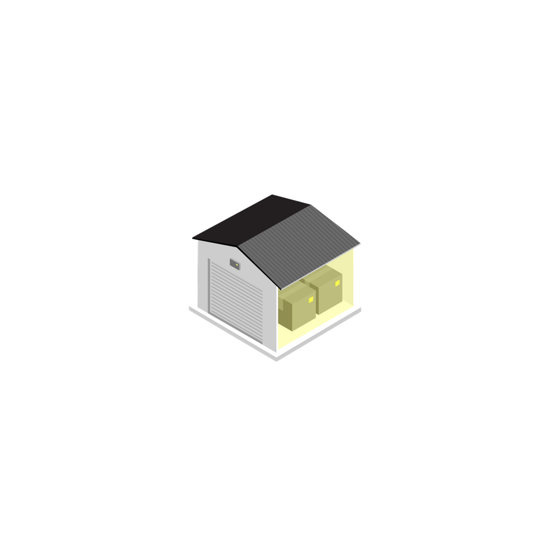
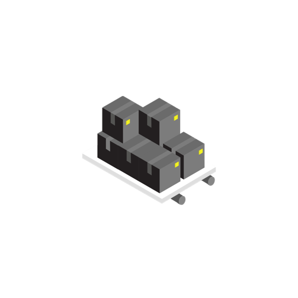
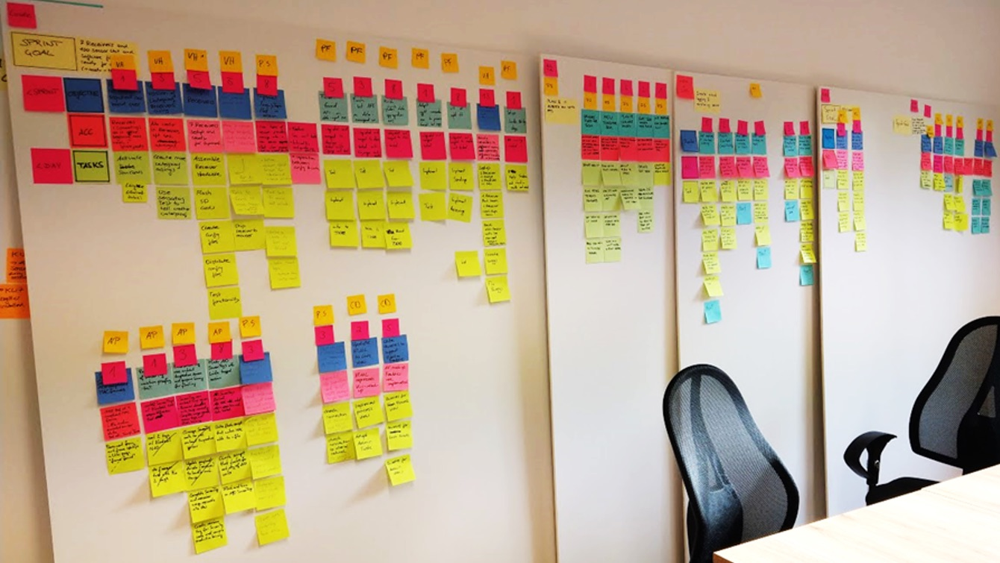
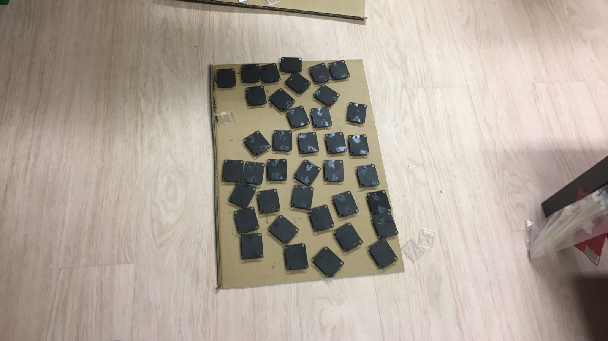
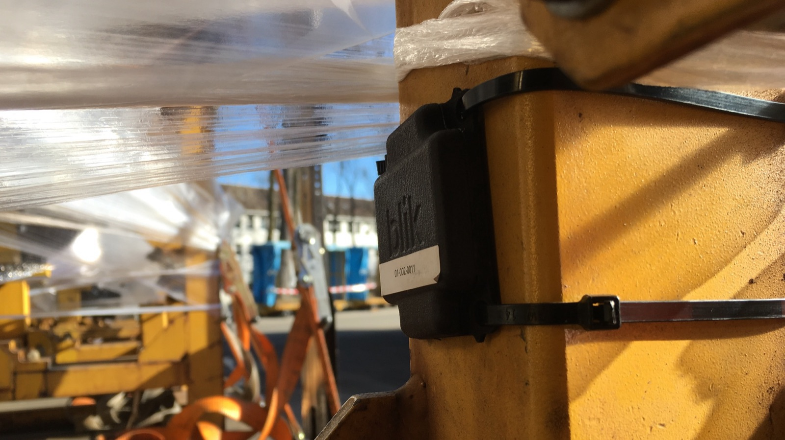
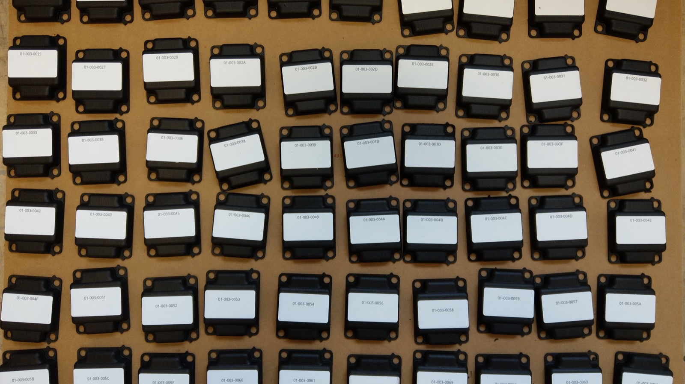
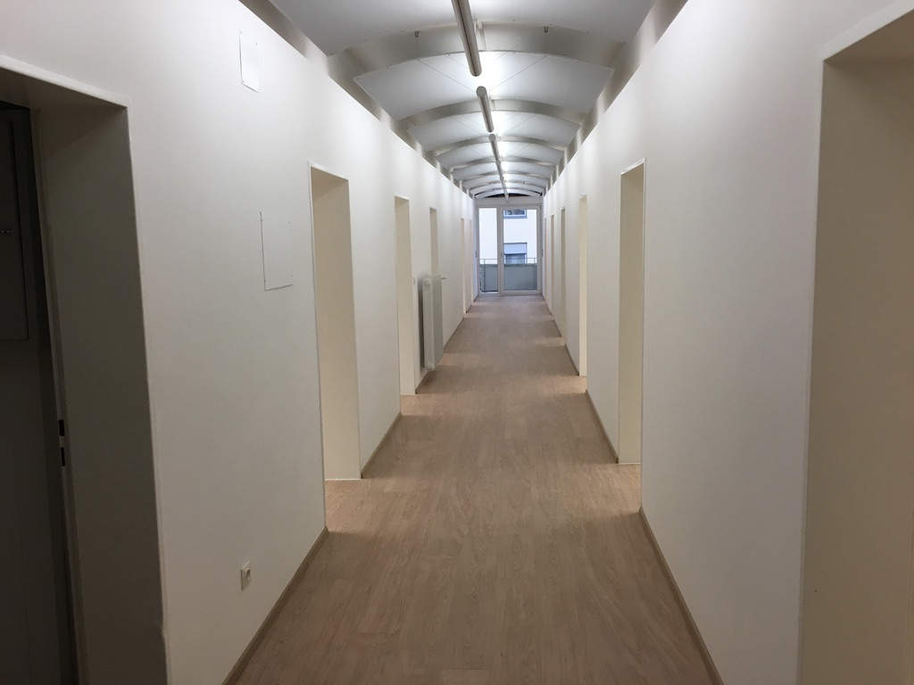

- 1Open the link
github.com/BaNburger/AmbitiousEntrepreneurship - 2Go to modules
then 11-founder-health - 3Click the lecture PDF
M11_Lecture_Founder-Health.pdf, download top right
Module 11 · Ambitious Entrepreneurship
Founder Health
How do you build a company without breaking yourself?
Course path
- 00
- 01
- 02
- 03
- 04
- 05
- 06
- 07
- 08
- 09
- 10
- 11
- 12
Course material · scan now
All slides live on GitHub
The newest version, free, no account needed
Before we start
Today is personal
Nothing you say is collected, graded or read out
🫶
Share what you choose
Share what you choose
🚪
Sit out anything, no reason needed
Sit out anything, no reason needed
☎️
Where to get help is at the end
Where to get help is at the end
Where we are · the course
From the venture to the founders
Thirteen sessions from first idea to first revenue. What teams have by now:
Paying customers from strangers
First users (M08)
First users (M08)
A North Star and its drivers
Product management (M10)
Product management (M10)
A team agreement, written early
Team (M01)
Team (M01)
Check-in · table talk
Which failure are you secretly proud of?
Pivot or persevere
Under your line? That is a decision, not a failure
Your last test: did half your paying customers come back?
Chapter 1 of 12
Previously on Ambitious Entrepreneurship
Two pictures from earlier sessions that you need today, then today's question.
Previously · Team (M01)
Your team wrote down how it works
Previously · Product management (M10)
Your funnel now feeds one number
Today's question · think, don't answer
How do you build a company without breaking yourself?
Chapter 2 of 12
Your presentations
Your venture's numbers in three minutes per team, and how you are stays out.
Your presentations · make it credible
Show us where you're at in 3 minutes or less!
Facts
Product management (M10)- North Star, drivers
- Build or grow, Now bets
Numbers
Your records- Revenue vs €1,000, €3,000
- Back in 14 days, lost
- North Star, kill line
Quotes
Customers- Why one left
- Why one stays
Images
KPI Tracker- Cropped, no customer data
The bets: expected effect against what happened, and one no you sent
What did you do?What did you learn?How can we help?
Input 1 of 6 · Chapter 3 of 12
Expect it: a brief history of failure
Most startups fail, the process is known, and it is all just theory.
Input 1 of 6 · Expect it · three questions
Why do so many startups fail?
1
Why do startups fail?
2
Can you avoid mistakes?
3
Does knowing the process protect you?
I can accept failure. Everyone fails at something. But I can't accept not trying.
Why do startups fail?
Startups rarely die of one thing
Top reasons in 111 post-mortems, several per startup
Why do startups fail?
It's always a people problem
And then there is timing
"No matter how it looks at first, it's always a people problem."
"Timing is the major variable. It's the major form of entrepreneurial risk … maybe by a wide margin."
Mistakes aren't a necessary evil. They aren't evil at all. They are an inevitable consequence of doing something new.
Book
Creativity, Inc.
Ed Catmull, 2014
The process is known · re-shown
Commitment is risky
The process is known
24 steps, all written down
Disciplined entrepreneurship, one way to read the course
1Market segmentation
2Select a beachhead market
3Build an end user profile
4TAM for the beachhead
5Persona for the beachhead
6Full life cycle use case
7High-level product spec
8Quantify the value proposition
9Your next 10 customers
10Define your core
11Chart your competitive position
12The customer's organisation
13Process to acquire a paying customer
14TAM for follow-on markets
15Design a business model
16Set your pricing framework
17Unit economics
18Map the sales process
19Customer economics
20Identify key assumptions
21Test key assumptions
22Define the MVP
23Prove your beachhead with your MVP
24Develop a product plan
Quick guess · hands
What share of founders show signs of strain?
93%
of founders show signs of mental health strain89%
of founders remain glad to be entrepreneurs
The process is known · re-shown
Climb the evidence, rung by rung
A brief history of failure
All just theory
Input 1 of 6 · Expect it · the answers
Expect it: failure comes with trying
1
Why do startups fail?
Rarely of one thing, and in the end it's always a people problem
2
Can you avoid mistakes?
No. They are the inevitable consequence of doing something new
3
93%
Does knowing the process protect you?
No. It's all just theory: 93% of founders still show strain
Input 2 of 6 · Chapter 4 of 12
See it: my story
My own startup, blik, from start to finish, in photos and five sentences.
Input 2 of 6 · See it · three questions
What does failing look like from inside?
1
What did we set out to do?
2
What happened instead?
3
What kept us going?
My story
What is blik?


My story · blik
Let's succeed or fail quickly!
My story · blik
"One of the most promising startups of the year!"
My story · blik

My story · blik

My story · blik

It always takes twice as long and costs twice as much as you think.
Let's build something our customers will love!
The next big deal is just around the corner.
My story · blik

When will we build something our customers will love?
The next big deal is still around the corner.
My story · blik

Input 2 of 6 · See it · the answers
See it: the next deal is always around the corner
1
What did we set out to do?
Succeed or fail quickly
2
What happened instead?
It always takes twice as long and costs twice as much as you think
3
What kept us going?
The next big deal was always just around the corner
Input 3 of 6 · Chapter 5 of 12
Feel it: prepare to be alone
Why founding is this stressful, how it feels, and why failure hurts for real.
Input 3 of 6 · Feel it · three questions
Why does it hurt this much?
1
Why is founding so lonely?
2
Why does failure hurt so much?
3
Where does your stress come from?
76%
of founders feel lonely
Prepare to be alone
Some decisions you make alone
Sooner or later, every founder makes these
- Tell it like it is
- Lay people off
- Demote loyal friends
- Bet the company
- Step back, step down
- …
"It's better to have no cofounder than to have a bad cofounder, but it's still bad to be a solo founder."
Sam Altman
Prepare to be alone
Take care of YOU first
How does it feel?
Where can we go from here? What can we do now? How can we be successful? What do we need to do? How did we end up here? What did we do wrong? Why is this not working? Are we doing good work? What are we missing? Where can we go from here? What can we do now? How can we be successful? What do we need to do? How did we end up here? What did we do wrong? Why is this not working? Are we doing good work? What are we missing? Where can we go from here? What can we do now? How can we be successful? What do we need to do? How did we end up here? What did we do wrong? Why is this not working? Are we doing good work? What are we missing? Where can we go from here? What can we do now? How can we be successful? What do we need to do? How did we end up here? What did we do wrong? Why is this not working? Are we doing good work? What are we missing? Where can we go from here? What can we do now? How can we be successful? What do we need to do? How did we end up here? What did we do wrong? Why is this not working? Are we doing good work? What are we missing?
Prepare to be alone
What research says
Founding is stressful, and often satisfying
One study finds more strain. A meta-analysis of 94 studies finds a little more satisfaction
ONE US STUDY, SELF-REPORT
72%
of 242 founders were affected by a mental health condition, their own or their family's49% · 32% reported a lifetime condition, founders against a comparison group
Founders
49%
Comparison group
32%
94 STUDIES, 82 COUNTRIES
Morepositive wellbeing than employees, life satisfaction included
Sameill-being. Where the rule of law is weak, founders fare worse
Why failure hurts
This is real, not weakness
🧠
Rejection lights up the pain network
Social exclusion activates a region that physical pain does
🧺
All your worth in one basket
When "I am my startup", its failure feels like yours
🔁
Replaying it makes it last longer
Rumination keeps a low mood going
🪜
Grief keeps no timetable
After a loss, expecting fixed stages can hurt those who don't follow them
Understanding distress
Know where your stress comes from
Stressor, stress, reaction. For founders, six sources
Input 3 of 6 · Feel it · the answers
Feel it: lonely, painful and real
1
76%
Why is founding so lonely?
76% of founders feel lonely, and some decisions you make alone
2
Why does failure hurt so much?
Rejection lights up the pain network. It is real, not weakness
3
Where does your stress come from?
Six sources: uncertainty, money, social pressure, workload, expectations, loneliness
Chapter 6 of 12
Your turn: you and failure
Ten minutes about you and failure, alone, in pairs, then two voices for the room.
Your turn · 10 minutes
You and failure
1
The last time I failed at something I cared about, what did I tell myself?
2
When things go wrong, what's my first reflex?
hide · push harder · blame · analyse · talk to someone
3
If my startup failed next year, what would still be me?
4 min
Alone, write it down
Alone, write it down
3 min
In pairs, share one answer
In pairs, share one answer
3 min
Two voices for the room
Two voices for the room
Input 4 of 6 · Chapter 7 of 12
Carry it: lessons from 20+ founders
What founders told me about looking after yourself and your co-founder.
Input 4 of 6 · Carry it · three questions
How do you last?
1
Who are you without your startup?
2
What helps you recover?
3
How do you look after your co-founder?
Taking care of yourself
as a founder
Taking care of yourself
"I am CEO and Co-Founder of my startup."
Taking care of yourself
"Who am I?"
Take the startup away. What is left?
From external to internal self
From the labels to what you really need
From external to internal self · think, alone
Who would you be without the labels?
If there were no Instagram and no LinkedIn, who would you like to be?
If there were no one to impress, no one to judge you, what would you do?
If you had none of your achievements to show, how would you describe yourself?
Taking care of yourself
Six practices, grouped as doing, planning and living
Doing
Gratitude
Appreciation
Planning
Reflection
Living
Exercise
Meditation
Sleep
What the evidence says, per practice
Real effects, mostly small. Keep one
🏃ExerciseIn people with depression, walking or jogging beat usual care or a placebog = −0.62, moderate, low certainty
😴SleepAfter a good night, founders judged new venture ideas better3 studies with founders
✍️ReflectionAn evening note on what weighs on you helps, a littler = .075, 146 trials
🙏GratitudeLifts well-being a little, no more than other good exercisesd = .17, small
🧘MeditationEases anxiety and depression a little0.38 and 0.30 at 8 weeks, 47 trials
What actually helps · the evidence
Five things research backs
⏳
You recover faster than you predict
🤲
Self-compassion goes with less anxiety and depression
🗣️
Change the sentence. "The startup failed", not "I am a failure"
🪞
Get distance. Talk to yourself by name, read the racing heart as fuel
🌱
After hard events, resilience is the norm, about two in three
about2 in 3resilient after hard events
You are not your work!
Taking care of your co-founder
as a relationship
Taking care of your co-founder · the pace
Pack the scary bits first
Otherwise they won't fit
Quick ask · hands
What is your team's biggest rock before Demo Day?
Input 4 of 6 · Carry it · the answers
Carry it: you are not your work
1
Who are you without your startup?
More than your labels. You are not your work
2
What helps you recover?
One practice you keep. The effects are real, mostly small
3
How do you look after your co-founder?
Talk early and honestly, and pack the scary bits first
Input 5 of 6 · Chapter 8 of 12
Close it: when it's over
If it comes to that, close the company in the right order and leave no grudge.
Input 5 of 6 · Close it · three questions
If it comes to that, what comes first?
1
What do you do on the day you decide?
2
What must you know in Germany?
3
How do you face disappointed investors?
When it's over
Investors first, on day one
A wind-down checklist
- On the day you decide1 Tell your investors2 Make a plan3 Call your lawyer4 Tell your team the plan
- The following days1 Book the notary2 Brief your tax advisor3 1:1 with every employee4 Plan the wind-down, you'll need your team for it
- Then terminate everything1 Infrastructure and tools2 Supplier and customer contracts3 Memberships and subscriptions (those are nasty)4 All assets, big to small
When it's over · Germany, GmbH or UG
Four rules to know before you close
Orientation only, as of 2026. Not legal advice
Insolvent?
File without delay, at the latest 3 weeks after illiquidity, 6 weeks after over-indebtedness. Waiting longer is a crime.
§15a InsOSolvent?
Liquidation takes a year at least. After the public call to creditors, the blocking year runs before anything goes back to shareholders.
§73 GmbHGAfterwards
Someone keeps the books for 10 years, often a founder.
§74 GmbHGJob ends?
Register as job-seeking at least 3 months before the job ends, or within 3 days of knowing. Your team too.
§38 SGB III
When it's over
Facing disappointed investors, no surprises
1
No surprises. Share bad news early, in writing, with numbers. Keep the updates coming when it gets bad.
2
Bring options, not just the problem. Bridge, pivot, sale or acqui-hire, orderly wind-down, plus your recommendation.
3
Own it. No blame, no spin. Say what you would do differently.
4
Close the loop. A final update. What happened, what's left and who gets it, where the team landed. Then say thank you.
5
Know their math. About 3 in 4 US venture-backed startups don't return investors' capital, by Ghosh's count. Pros expect losses, not surprises. Angels, friends and family, call them personally.
![A made-up investor update in a mail draft to four investors, subject: Update: 4 months of cash, three options. Bad news first, so you hear it from me now, not in June. Sales did not take off. Marked 1, the numbers: cash 180k euros, burn 45k a month, runway 4 months, revenue 6k flat. Marked 2, the options: A, a 150k bridge, only with a buyer in sight. B, a sale of the team, one buyer is talking to us. C, wind down by June, every bill paid, our pick. Marked 3: My mistake: we hired two engineers before a single customer paid. Next time, the first payment comes first. Then: I will call each of you before we decide](media/m11-investor-update.png)
93%
of founders show signs of mental health strain89%
of founders remain glad to be entrepreneurs
Input 5 of 6 · Close it · the answers
Close it: investors first, no surprises
1
What do you do on the day you decide?
Tell your investors first, make a plan, call your lawyer, tell your team
2
What must you know in Germany?
Insolvent: file without delay. Solvent: liquidation takes at least a year
3
How do you face disappointed investors?
No surprises: bad news early, in writing, with numbers and options
Input 6 of 6 · Chapter 9 of 12
Own it: not one single regret
What founders who failed shared with me, and the advice I give.
Input 6 of 6 · Own it · three questions
Was it worth it?
1
Do founders who failed regret it?
2
What did they all find?
3
What is my advice?
Not one single regret
Let's sit down together, shared insights
- You don't get it until you have been there
- It's a learning journey nobody regrets
- It's always tough with your co-founders
- In the end, it was too long
- There is always the next big thing around the corner
- "Everything is great" is a lie
Not one single regret
Let's sit down together, my advice
- It gets you when you least expect it
- Take more time for yourself than you anticipate
- Liquidation takes longer than you think
- Never leave with a grudge
- Don't jump into the next thing
Input 6 of 6 · Own it · the answers
Own it: a journey nobody regrets
1
Do founders who failed regret it?
No. It's a learning journey nobody regrets
2
What did they all find?
It always took too long, and "everything is great" is a lie
3
What is my advice?
Take more time for yourself than you anticipate. Never leave with a grudge
Chapter 10 of 12
Wrap-up and fireside Q&A
Three sentences to take home, your week, where to get help, then the fireside.
Wrap-up · how do you build a company without breaking yourself?
Three things to take home
Say them tomorrow without the slide
IMost startups fail.Plan for it, don't fear it.
IIYou are not your work.Diversify your identity.
IIITake care of YOU,the people, the product, the profits, in that order.
Recap · picture 1 of 2
Who are you, besides the startup?
Recap · picture 2 of 2
YOU first, then the people, the product, the profits
Reflection 1 of 3 · the content
What could you apply?
🛠️
What could you apply?
🤕
What gave you a hard time?
Reflection 2 of 3 · the process
Man vs. machine
🤖
Where did AI actually help you?
🧠
Where was your genius needed?
🕴️
What are your best hacks to share?
Reflection 3 of 3 · the results
Rose, thorn, bud
🌹
What was the breakthrough today?
🌵
What was the hardest part today?
🌱
What is an idea/feature you didn't have time to finish, but want to explore later?
Reach €5,000 cumulative revenue from outside your social graph, keep the private maps you chose, of what drains and energises you, for seven days, and hold one honest co-founder conversation that ends in one agreed change in your Team sheet, with a revisit date.
7days,
your map
your map
The learning floor is €2,000 cumulative and the conversation with its written change.
Your stop line. "If I catch myself [my sign] twice this week, I tell my co-founder and take the next evening off."
Homework · how to do it
Map it privately, sell daily
The map is an offer. Skip it without a reason
1
Start or continue your map today, on paper or in a note only you see. Each stressful moment and its source, then what energises you.
2
Keep one practice that research backs. Sleep, exercise, an evening note or gratitude. Not all four.
3
Pack the scary bits first, what must happen before Demo Day. Your pipeline founder from Product management (M10) keeps selling every day.
4
Ask AI for a blind read of your pipeline, raw notes without names or your hypothesis. Say where it disagrees.
!
Watch out. Your map never goes into an AI tool or a shared file.
5
Read your map on day seven. Your three strongest drains, and why? Tell your team "yes, seven days" or "no".
6
Draft your pitch, ugly. Ten slides in Sequoia's order.
Homework · what you come back with
Good is kept, said and still selling
GOOD
WEAK
Map
Seven days. Late payers drain, customer calls energise
Dropped on day two
Talk
Both said how they are. Sunday off, revisit in four weeks
"All good?" "All good."
Pace
Scary bits first. €2,600 so far
Selling paused "for now"
Where to get help
More than a bad week? Talk to someone
A bad week is normal. More? Talk to someone outside the team
Talk to someoneYour doctor, university counselling or a founder you trust
Germany, nowTelefonSeelsorge 0800 111 0 111 or 0800 111 0 222, free, day and night
Austria · Switzerland142 · 143
Emergency112
Elsewherefindahelpline.com
Fireside Q&A
Pull your chairs closer. Ask me anything, blik's numbers, investors, what I'd do differently.
References · 1 of 5
Sources in this deck
- Abramson, L. Y., Seligman, M. E. P., & Teasdale, J. D. (1978). Learned helplessness in humans. Journal of Abnormal Psychology, 87(1), 49–74.
- Altman, S. (2014). Lecture 2, Team and execution. How to Start a Startup. Y Combinator.
- Aulet, B. (2013). Disciplined entrepreneurship. Wiley.
- Catmull, E. (2014). Creativity, Inc. Publisher not checked, quoted as two reviews of the book quote it.
- CB Insights (2021, August 3). The top 12 reasons startups fail.
- Crocker, J., & Wolfe, C. T. (2001). Contingencies of self-worth. Psychological Review, 108(3), 593–623.
References · 2 of 5
Sources in this deck
- Davis, D. E., et al. (2016). Thankful for the little things. Journal of Counseling Psychology, 63(1), 20–31.
- Eisenberger, N. I., Lieberman, M. D., & Williams, K. D. (2003). Does rejection hurt? Science, 302(5643), 290–292.
- Fernet, C., Torrès, O., Austin, S., & St-Pierre, J. (2016). The psychological costs of owning and managing an SME. Burnout Research, 3(2), 45–53.
- Frattaroli, J. (2006). Experimental disclosure and its moderators. Psychological Bulletin, 132(6), 823–865.
- Freeman, M. A., Staudenmaier, P. J., Zisser, M. R., & Andresen, L. A. (2019). The prevalence and co-occurrence of psychiatric conditions among entrepreneurs and their families. Small Business Economics, 53(2), 323–342.
- Gage, D. (2012, September 20). The venture capital secret. 3 out of 4 start-ups fail. The Wall Street Journal.
- Galatzer-Levy, I. R., Huang, S. H., & Bonanno, G. A. (2018). Trajectories of resilience and dysfunction following potential trauma. Clinical Psychology Review, 63, 41–55.
References · 3 of 5
Sources in this deck
- Gesetze im Internet: §15a InsO, §§65, 73 and 74 GmbHG, §§38 and 159 SGB III, as of 20 October 2026. gesetze-im-internet.de.
- Gilbert, D. T., Pinel, E. C., Wilson, T. D., Blumberg, S. J., & Wheatley, T. P. (1998). Immune neglect. Journal of Personality and Social Psychology, 75(3), 617–638.
- Gish, J. J., Wagner, D. T., Grégoire, D. A., & Barnes, C. M. (2019). Sleep and entrepreneurs' abilities to imagine and form initial beliefs about new venture ideas. Journal of Business Venturing, 34(6), 105943.
- Goyal, M., et al. (2014). Meditation programs for psychological stress and well-being. JAMA Internal Medicine, 174(3), 357–368.
- Help lines, official sites as of 20 October 2026: telefonseelsorge.de, telefonseelsorge.at, 143.ch, digital-strategy.ec.europa.eu (112), findahelpline.com.
- Hoffman, R. (host). The 6 secrets of great timing, with Marc Andreessen. Masters of Scale (podcast, transcript, n.d., page dated 4 January 2022).
- Horowitz, B. (2014). The hard thing about hard things. HarperCollins.
References · 4 of 5
Sources in this deck
- Jamieson, J. P., Nock, M. K., & Mendes, W. B. (2012). Mind over matter. Journal of Experimental Psychology: General, 141(3), 417–422.
- Jordan, M. (1994). I can't accept not trying. HarperSanFrancisco.
- Kross, E., et al. (2014). Self-talk as a regulatory mechanism. Journal of Personality and Social Psychology, 106(2), 304–324.
- MacBeth, A., & Gumley, A. (2012). Exploring compassion. Clinical Psychology Review, 32(6), 545–552.
- Nobel, C. (2011, March 7). Why companies fail, and how their founders can bounce back. HBS Working Knowledge.
- Noetel, M., et al. (2024). Effect of exercise for depression. BMJ, 384, e075847.
- Nolen-Hoeksema, S. (1991). Responses to depression and their effects on the duration of depressive episodes. Journal of Abnormal Psychology, 100(4), 569–582.
References · 5 of 5
Sources in this deck
- Richardson, C. (2024). Fuelling founder resilience. Founder Resilience Research Report 2024. Foundology with UCL School of Management.
- Ries, E. (2011). The lean startup. Crown Business.
- Stephan, U., Rauch, A., & Hatak, I. (2023). Happy entrepreneurs? Everywhere? Entrepreneurship Theory and Practice, 47(2), 553–593.
- Stroebe, M., Schut, H., & Boerner, K. (2017). Cautioning health-care professionals. OMEGA, 74(4), 455–473.
- Wach, D., Stephan, U., Weinberger, E., & Wegge, J. (2021). Entrepreneurs' stressors and well-being. Journal of Business Venturing, 36(5), 106016.
- Weinberg, G. M. (1985). The secrets of consulting. Original publisher not checked.
„Et hätt noch immer jot jejange."
"It always turned out fine." · §3 Rheinisches Grundgesetz
Module 11 · Founder Health · Workshop · 90 minutes
Workshop: the energy audit
Map what drains you, say how you really are, and plan a week you can hold.
Workshop · before we start
Today is personal
Nothing you write is collected or read out
🫶
Share what you choose
Share what you choose
🚪
Sit out any step
Sit out any step
☎️
Where to get help is in the homework
Where to get help is in the homework
Workshop · the map for step 1
Know where your stress comes from
Stressor, stress, reaction. For founders, six sources
Workshop · step 1 of 3
Map what drains you
1STEP 1 · 25 MIN
MAP WHAT DRAINS YOU
Know what drains and energises you. Alone
- Three questions in writing: what I told myself, my reflex, what stays
- Map the last two weeks: each stressful moment and its source
- Map what gave you energy
- Stop line: a sign others see, how often, what then
- Pick one practice you keep this week
Output Map, stop line and practice, kept by youMinutes 25
Workshop · step 2 of 3
Say how you really are
2STEP 2 · 40 MIN
SAY HOW YOU REALLY ARE
Every founder says how they are. One change
- Open your Team (M01) agreement in the Team sheet
- Go round once. Listen, don't fix. Anyone may pass
- Needs, values, expectations, communication style, energy
- Agree one change until your next big deadline, with a revisit date
- Each founder confirms, dated
Output One change in your Team sheet, every founder's yesMinutes 40
Workshop · step 3 of 3
Pack the scary bits first
3STEP 3 · 25 MIN
PACK THE SCARY BITS FIRST
A week your team can hold that still sells
- Name what must happen next and keeps slipping
- Put them in first, each with an owner and a day
- Write your team line in your new Team sheet row
- Copy the bar, pick your level, euros by midweek
- One follow-up each, to a Pipeline lead or a customer's referral
Output Your week, the team line, the bar picked, asks sentMinutes 25
Arrived empty-handed?
Start with the agreement
No Team (M01) agreement? Write its Time and Feedback rows first. Solo? Hold Step 2 with a peer founder or mentor.
Where to get help
More than a bad week? Talk to someone
A bad week is normal. More? Talk to someone outside the team
Talk to someoneYour doctor, university counselling or a founder you trust
Germany, nowTelefonSeelsorge 0800 111 0 111 or 0800 111 0 222, free, day and night
Austria · Switzerland142 · 143
Emergency112
Elsewherefindahelpline.com
Reach €5,000 cumulative revenue from outside your social graph, keep the private maps you chose, of what drains and energises you, for seven days, and hold one honest co-founder conversation that ends in one agreed change in your Team sheet, with a revisit date.
7days,
your map
your map
The learning floor is €2,000 cumulative and the conversation with its written change.
Your stop line. "If I catch myself [my sign] twice this week, I tell my co-founder and take the next evening off."
Look after each other. See you next time!
Module 11 · Founder Health · Case discussion · about 90 minutes
Case discussion: Pitch
Stand with Christian Reber at the end of 2023 and decide whether he stays as chief executive or steps back.
Case · Pitch, Berlin, the end of 2023 · vote 1 of 2
Should he stay as Pitch's chief executive, or step back?
Option 1
Stay as chief executive
Option 2
Step back from the role
Case · the board plan
Sources on the left, the two options in the middle
Case · what happened until the end of 2023
Six years of growth, one cut, and a hard year
Case · diagnosis · 30 minutes
What weighed on Reber? Sort it by source
Each source needs a quote or an exhibit row from the case
Case · Exhibit 3
The money halved in two years
Atomico and EY measure different things and are not comparable with each other
Investment in German start-ups (EY), 2023: €3.1 billion in the first half, half of the first half of 2022
| Date | What Reber said about raising money |
|---|---|
| Quoted by CNBC, 12 April 2022 | "As a founder who is starting companies more frequently, I feel like it's never been better to raise." |
| 6 May 2022 | "Fundraising on similar terms between now and 2024 looks unlikely." |
Case · Reber's chair · 15 minutes
What would still be his without the title?
"When you're used to being in a leadership position and you realise it doesn't work any more, everything collapses at once. Like a house of cards."
Case · the co-founders' chair · 15 minutes
What could they have asked?
"I should have answered, 'Shit, honestly, I don't know, this is too much for me.' But I didn't say it out loud."
Case · vote 2 of 2
Same question. Who moved, and why?
Option 1
Stay as chief executive
Option 2
Step back from the role
Case · bridge · your step 2
Say it before it is a house of cards
Ask each co-founder one question about how they really are, and only listen
Where to get help
More than a bad week? Talk to someone
A bad week is normal. More? Talk to someone outside the team
Talk to someoneYour doctor, university counselling or a founder you trust
Germany, nowTelefonSeelsorge 0800 111 0 111 or 0800 111 0 222, free, day and night
Austria · Switzerland142 · 143
Emergency112
Elsewherefindahelpline.com
See you next time!